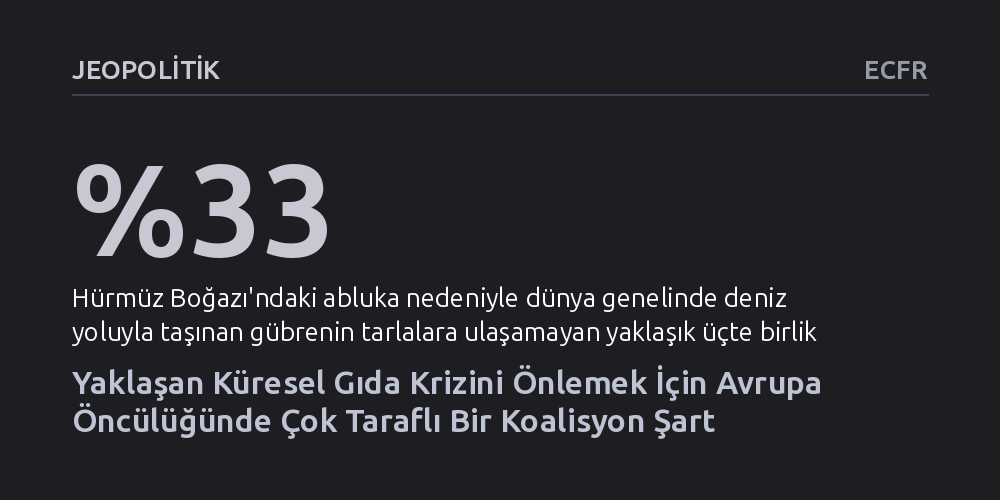

JEOPOLITIK · ECFR · 2026-09-08
Ukrayna savaşı, Hürmüz ablukası ve rekor El Niño kuraklığının kesişimi dünyayı ağır bir gıda krizine sürüklüyor. Çözüm; Avrupa'nın Karadeniz ve Hürmüz'deki sevkiyatları güvenceye alıp tarımsal üretimi fonlayacak küresel bir koalisyona acilen liderlik etmesidir.
Gıda krizlerinin yalnızca kuraklıktan değil, çatışma bölgelerindeki kritik deniz boğazlarının kapanması ve gübre tedarikinin çökmesiyle birleşerek küresel bir felakete dönüştüğünü gösteriyor.

Dünyanın kırılgan dengeleri, aynı anda tırmanan üç büyük şokun kesişimiyle sarsılıyor. Karadeniz'de süren Rusya-Ukrayna savaşı kritik tarımsal sevkiyatları kilitlerken, Hürmüz Boğazı'ndaki abluka küresel gübre akışını boğuyor. Bu jeopolitik gerilimlere Pasifik kaynaklı rekor bir El Niño dalgasının getirdiği kuraklıklar da eklenince, dünya genelinde gıda bulunabilirliği ve fiyat istikrarı uçurumun eşiğine gelmiş durumda.
Halihazırda 2,2 milyar insanın gıda güvencesinden yoksun yaşadığı ve gıda fiyatlarının 1999 yılındaki dip seviyelerin yaklaşık yüzde 75 üzerinde seyrettiği bir tabloda bu üçlü darbe, özellikle Güney Asya ve Sahra Altı Afrika'da kitlesel bir açlık tehlikesi doğuruyor. Üstelik bu vahim tablo, 2022'deki gibi etkili bir uluslararası liderliğin ve çok taraflı arabuluculuk kapasitesinin bulunmadığı derin bir diplomatik boşluk anında yaşanıyor.
Tarımsal üretimin can damarı olan gübre tedariki büyük ölçüde Hürmüz Boğazı'na bağımlı. Bu su yolu, bitkisel verimi doğrudan belirleyen azotlu gübrelerin ana geçiş koridoru olmasının yanı sıra, fosfatlı gübrelerin vazgeçilmez hammaddesi olan kükürtün küresel arzının yaklaşık yarısını taşıyor. Boğazdaki süregelen abluka nedeniyle deniz yoluyla sevk edilen gübrenin üçte biri tarlalara ulaşamıyor. Bu tıkanıklık, gübre fiyatlarının halihazırda en yüksek olduğu Sahra Altı Afrika ve Güney Asya'daki küçük üreticileri üretim yapamaz hale getiriyor.
Aynı esnada, dünya buğday ihracatının yüzde 30'unu, mısırın yüzde 20'sini ve ayçiçek yağının yüzde 60'ını karşılayan Karadeniz havzasında lojistik bir felç yaşanıyor. Karşılıklı liman ve altyapı saldırıları Ukrayna'nın ihracatını yüzde 75 budarken, Rusya'nın Karadeniz ve Azak Denizi'ndeki ihracat kapasitesinin yüzde 90'ından fazlasını devre dışı bıraktı. El Niño'nun etkisiyle küresel buğday üretiminin yüzde 3 gerilemesi beklenirken, Hindistan gibi üreticilerin başvurduğu korumacı ihracat kısıtlamaları gıda enflasyonunu daha da körüklüyor.
2022 yılında Birleşmiş Milletler ve Türkiye'nin arabuluculuğunda hayata geçirilen Karadeniz Tahıl Girişimi, benzer bir krizin önüne geçmiş ve alternatif güzergâhlar üzerinden gıda ve gübre akışını güvenceye almıştı. Ancak bugün aynı çözümü kopyalamak çok daha zor. Karadeniz liman altyapısının gördüğü ağır fiziksel hasar ve Tuna Nehri'ndeki su seviyelerinin düşüklüğü tahılın bölgeden tahliyesini lojistik açıdan fazlasıyla güçleştiriyor.
Diplomatik cephede ise küresel eşgüdüm mekanizmaları dağılmış durumda. Birleşmiş Milletler yönetim kademesindeki geçiş sancıları, ABD'nin çok taraflı kurumlara yönelik soğuk tutumu ve çatışan tarafların derinleşen uzlaşmazlığı, 2022 benzeri bir diplomatik zeminin kendiliğinden oluşmasını imkânsız kılıyor. Ortada tarafları aynı masaya çağırabilecek tek bir hegemon başkent ya da tek bir uluslararası örgüt bulunmuyor.
Bu küresel tıkanıklığı aşmak için Avrupa'nın, savaştan en çok etkilenen gelişmekte olan ülkeler ve çatışmanın tarafları üzerinde nüfuzu bulunan orta güçlerle (Brezilya, Mısır, Kazakistan, Meksika ve Türkiye) geniş tabanlı bir diplomatik koalisyona öncülük etmesi gerekiyor. Hazırlanacak yol haritası dört somut adıma dayanmalı:
İlk olarak, Dünya Gıda Programı'nın bütçe açığı hızla kapatılmalı ve CGIAR araştırma ağı öncülüğünde kuraklığa dayanıklı tarım modellerini yaygınlaştırmak için üç yıllık 500 milyon dolarlık bir fon devreye sokulmalıdır. İkinci olarak, Karadeniz'de tahıl taşıyan gemileri ve liman altyapısını koruyacak kısmi bir ateşkes müzakere edilmeli; Avrupa Ukrayna'ya seyyar depolama, tohum ve altyapı desteğini artırmalıdır. Üçüncü olarak, İran'ın kendi gübre ihracatının yaptırımlardan muaf tutulması ve gıda ithalatının güvenceye alınması karşılığında Hürmüz Boğazı'ndan gübre geçişini sağlayacak teknik bir denetim mekanizması kurulmalıdır.
Böylesi bir diplomatik girişimin önünde tarafların katı kırmızı çizgileri ve sahadaki tırmanma eğilimi gibi ciddi engeller bulunduğu muhakkak. Ancak bu inisiyatif, taraflar derhal uzlaşmaya varmasa bile sahada doğrudan sonuç üretebilecek "pişmanlık yaratmayacak" bir kurguya sahip. Çiftçilere sağlanacak tohum, gübre ve finansman desteği, diplomatik müzakerelerden bağımsız olarak gıda arzını hemen güvenceye almaya başlayacaktır.
Açlıkla mücadelede somut ilerleme kaydedilmesi, çatışan aktörler üzerindeki uluslararası meşruiyet baskısını artırarak Karadeniz ve Hürmüz Boğazı'nda uzlaşma zeminini genişletebilir. Parçalanmış ve kuralsızlaşmış bir dünyada Avrupa'nın böylesi ortak bir eylemi örgütlemesi, çok taraflı diplomasinin en yakıcı insani felaketler karşısında hâlâ sonuç alabileceğini kanıtlayacaktır.